攻略流程 (第四次超级机器人大战)
括号内为可能不加入的隐藏要素 。
第一话共通
加入机体：トロイホース、
マジンガーZ、アフロダイA
、ボスボロット、ガンダム、
ガンダムmkII、GP-01Fb、
メタス、ガンキャノン、
ゲッターロボ、
ゲシュペンスト、
ガンタンク、
マリンスペイザー
第一话共通
加入机师：主人公、トーレス
、兜甲児、さやか、ボス、
アムロ、コウ、エマ、
ファ、キース、
リョウ、ハヤト，ベンケイ
第一话通关时回合数
SRW4：7，SRW4S：15
转速路线
否则转缓路线
第二话（速）
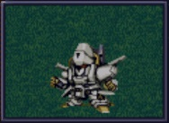
加入机体：エルガイム，ディザード
加入机师：ダバ，アム，リリス
第五话（速）
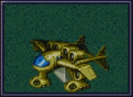
加入机体：イーグルファイター、
ランドクーガー、ランドライガー、
ビッグモス、ネモ、
(GMIII、リ・ガズィ)
加入机师：忍、沙羅、雅人、亮、
ブライト、ハサウェイ、（副主人公）
离队：トーレス
第四话（缓）
加入机体：イーグルファイター、
ランドクーガー、ランドライガー
、ビッグモス、ジェガン、
(GMIII、リ・ガズィ)
加入机师：忍、沙羅、雅人、亮、
ブライト、ケーラ、（副主人公）
离队：トーレス
第五话（缓）
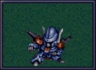
加入机体：エルガイム、
ディザード、
NT-1アレックス、
ザク改
加入机师：ダバ、
アム、リリス、
クリス、バーニィ
第六话（有恋人）
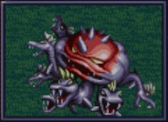
スタンピド
第七话
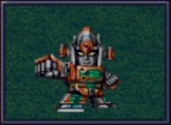
加入机体：ダイモス
、ガルバーFX II
加入机师：一矢、京四郎、ナナ
第九话
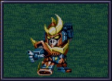
加入机体：ザンボット3
加入机师：勝平
、宇宙太、恵子
第十话（太平洋側）
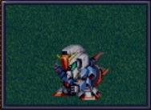
加入机体：Zガンダム
加入机师：カミーユ、ルー
升级：トロイホース→アーガマ
第十话（日本海側）
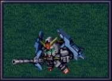
加入机体：Zガンダム、
Gディフェンサー、
ジェガン
加入机师：カミーユ、
カツ
升级：トロイホース
→ アーガマ
第十三话
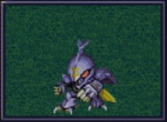
加入机体：ダンバイン、
ボチューン、（バストール）
加入机师：ショウ、チャム
、マーベル、（ガラリア）
第十四话
加入机体：ドリルスペイザー
、GP-03ステイメン
加入机师：マリア
升级：マジンガーZ
→ マジンガーZ（J）
アフロダイA
→ ダイアナンA
废弃：GP-01Fb
第十五话
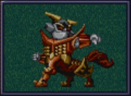
加入机体：コンバトラーV
加入机师：豹馬、十三、
大作、ちずる、小介
离队：京四郎/ナナ
第十六话
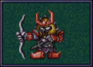
加入机体：（サーバイン
/ズワウス）
加入机师：（シルキー）
离队：（ダンバイン）
第十七话 （无ガラリア）
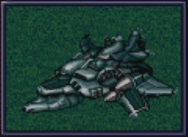
加入机体：ゴラオン
、ボチューン×2
加入机师：エレ、
ニー、キーン
第十七话 （有ガラリア）
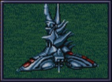
加入机体：グラン・ガラン
加入机师：シーラ、
ベル、エル
第二十话（真实系）
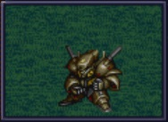
加入机体：（ガブスレイ）
、（Sガンダム）
加入机师：（サラ）
离队：（ガンタンク）
第二十一话
加入机体：ライディーン
、ブルーガー
加入机师：洸、
神宮寺、麗、マリ
SRW4：离队：ジェガン
/ザク改
追加武器：コンバトラーV
第二十三话（宇宙）
宇宙分队：ブライト、アムロ
、コウ、ファ、キース、
エルガイム系、ライディーン系、
ザンボット3 、ダンクーガ
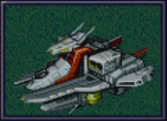
第二十四话（宇宙）
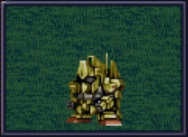
加入机体：百式、
グレンダイザー、
ダブルスペイザー
加入机师：クワトロ、
デューク、ひかる
追加武器：ライディーン
第二十五话（宇宙）
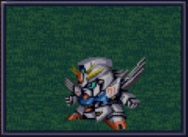
加入机体：ZZガンダム、
F91、エルガイムmkII、
ヌーベルディザード
加入机师：ジュドー、
シーブック
离队：ディザード、
カルバリーテンプル
/エルガイム
第二十六话（宇宙）

加入机体：νガンダム、
ヒュッケバイン
/グルンガスト
升级：アーガマ
→ ネェル・アーガマ
离队：ガンダム
第二十三话（地上）
地面分队成员：万丈、カミーユ、
エマ、ハサウェイ、ケーラ、
クリス、バーニィ、ルー、
カツ、サラ、ダンバイン系、
マジンガー系、ダイモス系、
ゲッターロボ、コンバトラーV
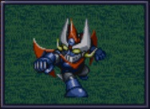
加入机体：ビューナスA
、グレートマジンガー
加入机师：ジュン
、鉄也
第二十四话（地上）
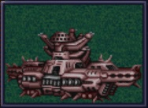
加入机体：（バイアラン）
加入机师：（副主人公）
升级：ゲッターロボ
→ ゲッターロボG
第二十五话（地上）
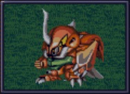
加入机体：ビルバイン、
ヒュッケバイン
/グルンガスト
离队：ボチューン
第二十七话
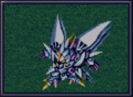
SRW4S：加入机体：サイバスター
SRW4S：加入机师：マサキ
SRW4：离队：GMIII
两队合流，
另一队的机师等级+4
第二十八话
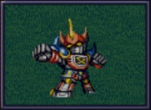
加入机体：ゴーショーグン
加入机师：真吾、
レミー、キリー
离队：ネモ
第二十九话（真实系）
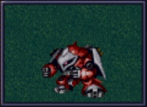
加入机体：（ヤクト・ドーガ（赤））
加入机师：（クェス）
离队：（ジェガン）、
神宮寺/麗/マリ中两人
第三十二话
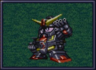
加入机师：（フォウ）
离队：（クワトロ），
SRW4：离队：ダンクーガ
/コンバトラーV
追加武器：ライディーン
第三十三话（フォウ已加入）
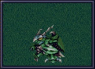
加入机体：（ライネック）
加入机师：（リムル）
离队：（ボチューン）
第三十三话（フォウ未加入)
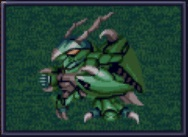
离队：ザク改/ガンタンク/
ジェガン/(SRW4S: GMIII)
升级：Sガンダム
→ ExSガンダム
第三十四话（香月未被抓走）
加入机体：サイバスター
加入机师：マサキ
追加武器：ヒュッケバイン
、グルンガスト
第三十四话（香月已被抓走）
人間爆弾の恐怖
加入机体：サイバスター
加入机师：マサキ
追加武器：ヒュッケバイン
、グルンガスト
第三十五话
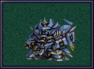
加入机体：ザムジード
加入机师：ミオ
升级：
ゲッターロボG
→ 真・ゲッターロボ
追加武器：ザンボット3
第三十六话（A队）
A队成员：ブライト、主人公
、副主人公、アムロ、
ジュドー、クワトロ、コウ、
エマ、ファ、キース、
ハサウェイ、ケーラ、クリス
、バーニィ、ルー、カツ、
サラ、鉄也、ジュン、ひかる
、デューク、エルガイム系、
ライディーン系、ザンボット3
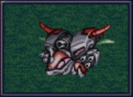
替换：ネェル・アーガマ
→ ラー・カイラム
SRW4：离队：NT-1アレックス
第三十七话（B队）
B队成员：カミーユ、
シーブック、クェス、フォウ
、甲児、さやか、ボス、
マリア、万丈、マサキ、ミオ
、ダンバイン系、ダイモス系
、ゲッターロボ、
ゴーショーグン、ダンクーガ
、コンバトラーV、其他
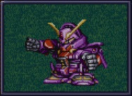
第三十八话（A）
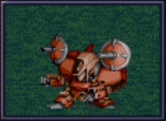
加入机体：
（アシュラテンプル）
加入机师：（ギャブレー）
升级：GP-03ステイメン
→ GP-03デンドロビウム
第三十九话（有クワトロ）
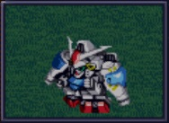
加入机体：GP-02A
、ビギナ・ギナ
加入机师：ガトー
、セシリー
第三十九话（无クワトロ)
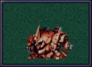
第三十九话B（SRW4S:有リューネ)
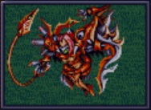
第四十话（有ギャブレー）
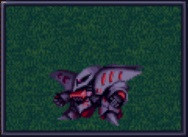
加入机体：(キュベレイmkII×2)
加入机师：プル、プルツー
(スウィートウォーターへ行く:
C队：主人公、ジュドー、プル
、プルツー、エルガイム队)
第四十话（无ギャブレー）
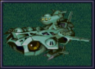
包囲網突破！(A)
第四十二话（甘泉）
加入机体：ガッデス
，グランヴェール
加入机师：テュッティ
，ヤンロン
第四十二话（不去甘泉）
加入机体：ガッデス
，グランヴェール
加入机师：テュッティ
，ヤンロン
第四十二话（无プル、プルツー）
加入机体：ガッデス
，グランヴェール
加入机师：テュッティ
，ヤンロン
第四十三话
总回合数一定值以内时
SRW4 319、SRW4S 349
加入机体：グランゾン，
ウィーゾル改，ノルス・レイ
加入机师：シュウ，
サフィーネ，モニカ
(SRW4：离队：
リューネ，テュッティ
，ヤンロン)
总计（第四次）：
共通剧情45人，其中4人离队。48机，其中5机离队。真实系剧情额外18人，20机（包括选择不离队的断空我队），其中2机离队。超级系剧情额外13人，13机（包括选择不离队的コンバトラーV队和クワトロ），其中1机离队。最终话真实系路线59人 61机 超级系路线54人 52机。最多能修改出64人，64机，所以不要在一开头新增太多部队。
总计（第四次S）：